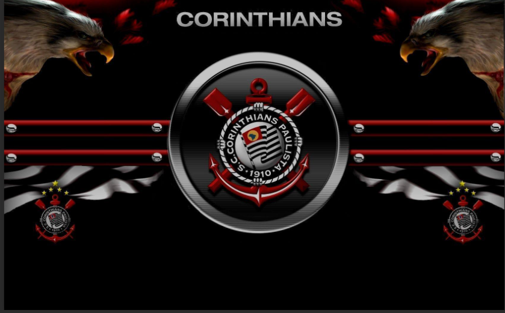

O Sport Club Corinthians Paulista foi fundado em 1º de setembro de 1910, à
luz de um lampião no bairro do Bom Retiro, em São Paulo,
por um grupo de operários inspirados no Corinthian FC inglês. Primeiros
Anos Representando o povo trabalhador, o "Timão" enfrentou preconceitos da
elite futebolística.
Em 1914, conquistou seu primeiro título paulista de forma invicta, com 10
vitórias em 10 jogos. Auge e Conquistas Nas décadas de 1920-30, dominou
com tricampeonatos paulistas e a Taça do Centenário (1922).
Nos anos 1990-2010, veio o primeiro Brasileirão (1990), Copa do Brasil
(1995), Libertadores invicta (2012) e Mundial de Clubes (2012). Legado
Símbolo da "Democracia Corinthiana" nos anos 80,
o Corinthians é o time do povo, com 30 Paulistas, 7 Brasileiros e 2
Mundiais até 2026.